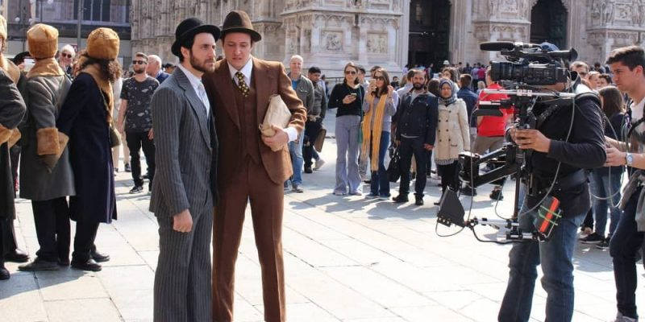
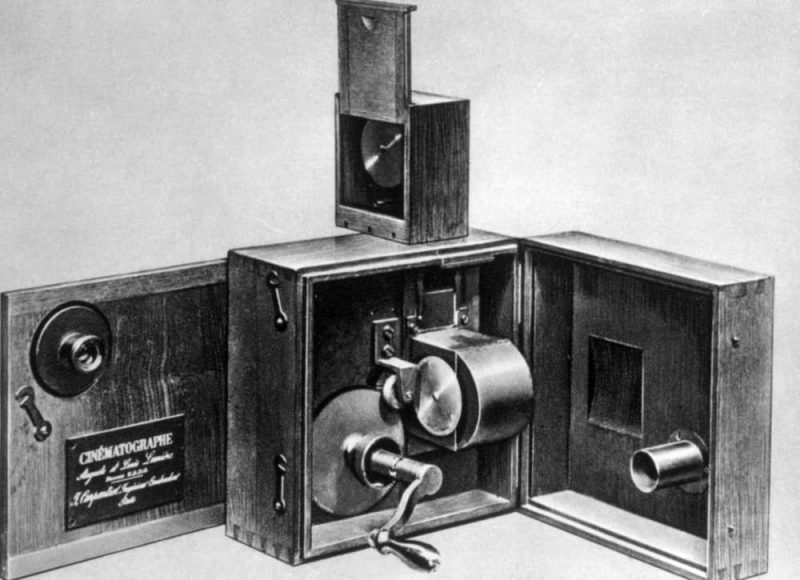

¿Qué es el cine?
Cuando hablamos de cine nos referimos, al mismo tiempo, a una técnica, una industria y a una forma de arte, cuyo rasgo central es la capacidad de recrear la ilusión del movimiento a partir de la captura y exhibición de fotografías (fotogramas) continuas a una velocidad mayor a la que el ojo puede detectar. La palabra “cine” es la forma abreviada de cinematografía, palabra formada por las voces griegas kiné (“movimiento”) y graphos (“escritura” o “inscripción”), y que es como se conoce a esta técnica particular, inventada en el siglo XIX. Inicialmente, se trató de un paso adelante en la evolución de la fotografía, pero a partir de 1895 pasó a ocupar un lugar formal entre las formas de espectáculo usuales en la época. Al ser aplicada al propósito de contar historias, la técnica cinematográfica devino también en un género artístico: el llamado “séptimo arte”. Hoy en día, el cine es una de las industrias del entretenimiento más populares y consumidas del mundo entero, ya sea en teatros especialmente adaptados para ello (las “salas de cine”), o bien a través de servicios de contenidos digitales o de la televisión. La evolución y sofisticación del cinematógrafo hizo que la grabación de películas, sobre todo en el seno de Hollywood y otros grandes consorcios de producción fílmica, empleara gigantescos equipos de profesionales especializados y recaudara normalmente millones de dólares en taquilla, comercialización y publicidad. Al mismo tiempo, distintas escuelas artísticas han surgido en torno a esta técnica narrativa a lo largo de sus menos de dos siglos de vida. Se han creado premios para celebrar las obras maestras cinematográficas y se considera al cine como una de las principales manifestaciones culturales de la humanidad contemporánea.
Origen del cine
El origen del cine se remonta a fines del siglo XIX, cuando se creó el cinematógrafo, o sea, la máquina capaz de grabar y reproducir imágenes para crear la sensación del movimiento. Hubo muchos antecedentes a esta invención, que iba de la mano de los primeros pasos formales en la técnica de la fotografía. Quizá el más importante de ellos haya sido el “kinetoscopio” de los estadounidenses William Dickinson (1860-1935) y Thomas Alba Edison (1847-1931), cuyas funciones eran aún muy limitadas, en comparación con el cinematógrafo patentado en 1895 por los famosos hermanos Lumière, Auguste Marie (1862-1954) y Louis Jean (1864-1948), hijos del fotógrafo Antoine Lumière. Fueron ellos quienes, un 28 de diciembre de 1895 en París, llevaron a cabo la primera proyección pública de cine. Consistió en una serie de, por llamarlos de alguna manera, documentales: tomas de obreros trabajando o de un tren aproximándose a la estación de La Ciotat. Justamente la filmación del tren causó un impacto tan grande en los espectadores, que muchos huyeron despavoridos de la sala. Algún tiempo después, los Lumière fueron también los primeros en hacer ficción cinematográfica, adaptando una tira cómica de Hermann Vogel en dos cortometrajes humorísticos, conocidos hoy como “El regador regado” (L’arroseur arrosé). Inicialmente, estas exhibiciones se llevaban a cabo en sótanos, clubes nocturnos y cafés, con asistencia masiva y no duraban más que unos pocos minutos. Se trataba de un cine aún rudimentario, mudo y en blanco y negro, que acompañaban lecturas, música y mucha participación de la audiencia. Sin embargo, estos humildes inicios demostraron ser sumamente rentables, y una nueva industria surgió a lo largo de los siguientes 30 años, lista para invertir en la producción fílmica, pero también en la innovación de sus aparatos y materiales. Así nació la industria del cine. Gracias a ello, desde inicios del siglo XX tuvieron lugar los primeros intentos de un cine a color, cuyos primeros resultados formales aparecieron alrededor de 1915. Pero esto no sería algo popular hasta mediados del siglo. En cuanto al sonido, los primeros filmes eran acompañados en cada proyección por músicos en vivo, o a lo sumo con grabaciones musicales que acompañaban la atmósfera del relato. En 1927 apareció en los Estados Unidos el primer largometraje con un diálogo sincronizado, grabado en un disco aparte con cada carrete de la película, y que debían reproducirse al unísono. Se trató de “El cantante de Jazz” (The Jazz Singer). Conquistados el color y el sonido, en 1930 tuvo lugar la “Edad dorada” del cine. El séptimo arte había llegado para quedarse.
Géneros cinematográficos
El cine es un género artístico narrativo, es decir, que cuenta historias. En ese sentido, sus producciones responden a las clasificaciones tradicionales del teatro y las artes escénicas, o a menudo la literatura, distinguiendo así entre comedias, dramas, tragicomedias, etcétera. Sin embargo, el cine presenta también su propia clasificación, que atiende a las formas de producción del filme y al grado de intención artística detrás de ellas. A esto, comúnmente, se le conoce propiamente como géneros cinematográficos. Cine comercial. Equivalentes a los best-sellers en la industria del libro, estas producciones fílmicas tienen siempre el beneficio económico como objetivo fundamental, es decir, que buscan alcanzar a las audiencias más amplias y recaudar en taquilla la mayor cantidad posible de dinero. Suelen ir acompañadas de grandes despliegues publicitarios y, en términos artísticos, responden comúnmente a estándares muy tradicionales o poco innovadores. Cine de autor. Este título fue acuñado por los críticos de la revista francesa de cine Cahiers du Cinéma, para diferenciar las producciones fílmicas en las que el director deja una huella autoral evidente, o sea, que constituyen parte de un proyecto artístico reconocible y personal, y por lo tanto también de una noción de cine, de la estética y un estilo único de narrar. Son, digamos, las películas artísticas por excelencia. Cine independiente. Generalmente se refiere a producciones modestas, de bajo presupuesto, llevadas adelante por pequeñas casas productoras, al margen de los consorcios fílmicos tradicionales. No suelen contar con grandes estrellas de la actuación y en muchos casos sirven de debut a creadores e intérpretes. Cine animado. Se trata de producciones desprovistas de actores, y basadas en dibujos animados mediante la técnica cinematográfica. En la actualidad son más o menos computarizadas, y en ellas suelen intervenir actores únicamente para aportar sus voces al relato animado. Muchos de ellos están dedicados al público infantil y juvenil, aunque esto no sea un rasgo exclusivo. Cine documental. Se llaman “documentales” a las producciones fílmicas que buscan, justamente, registrar la realidad: documentarla, capturarla tal como es, y por lo tanto no echan mano a la ficción, sino que persiguen una mirada más o menos objetiva, casi se diría periodística. Sin embargo, no debe confundirse con el reportaje periodístico, ya que los documentales poseen también una postura propia en torno a lo contado. Cine de docu-ficción. Producciones que se manejan en un delgado y ambiguo límite entre lo documental y la ficción, a menudo con fines humorísticos o satíricos. Forman parte de este género los falsos documentales y los llamados “mockumentaries” o documentales satíricos. Cine experimental. En esta categoría se incluyen las producciones que intentan llevar más allá los límites de lo posible en el género cinematográfico, es decir, que intentan hallar nuevas formas de expresión con la cámara. Pueden considerarse como el equivalente al arte abstracto. Cine ambiental. Producciones dedicadas al registro de la naturaleza y de la vida silvestre, a menudo con fines ecológicos o medioambientales, por lo que pueden constituir verdaderas piezas de denuncia social o política. Pueden ser entendidas como formas muy específicas de cine documental.
Elementos del cine
El proceso cinematográfico es complejo, y en él intervienen diferentes instancias y elementos, que podemos abordar según su rol desempeñado en el proceso normal de producción fílmico.
El guión. La primera etapa de todo el proceso productivo del cine, consiste en crear el primer elemento del cine: el guión o storyboard, es decir, el bosquejo más o menos completo de la historia, detallando el modo en que será contada e incluso los tipos de fotografías que se tomarán para ello. A partir de estos textos preliminares se obtiene un guión literario (que cuenta la historia) y un guión técnico (que detalla cómo van a filmarla).
El casting. Así se llama al proceso de selección del personal que trabajará en la película, y corre por cuenta de la producción y del director, quienes escogerán entre los actores interesados quiénes son más adecuados para el papel, ya por razones de talento, ya por razones de apariencia o de otra naturaleza.
El rodaje. Se conoce como “rodaje” a la filmación propiamente dicha de la película, de acuerdo a lo estipulado en el guión. Para que ello pueda ocurrir, intervienen diferentes actores en el proceso:
La dirección. El director del filme está a cargo de conducir al equipo para que su visión particular de la historia pueda llevarse a la realidad. Es, si se quiere, el “autor” de la película, y es el responsable de coordinar los aspectos técnicos y artísticos de ella, junto a su equipo de profesionales.
La actuación. Los actores son indispensables para hacer una película. De ellos se espera que conozcan muy bien el guión y que encarnen lo más verosímilmente a sus personajes, prestando su imagen y sus voces para ello.
La iluminación. Dado que no siempre se tienen las condiciones climáticas necesarias para filmar adecuadamente, existe una intensa labor de iluminación que garantiza a la cámara las luces adecuadas para captar la imagen. No hay que olvidar que el cine es una forma de fotografía.
La fotografía. Justamente, los camarógrafos y directores de arte se ocupan de que la imagen capturada cumpla con los requisitos estéticos, narrativos y de calidad necesarios para que, una vez proyectados los fotogramas, todo salga tal y como el director quiere que salga.
El montaje y la edición. Una vez terminada la filmación, que puede durar días o semanas de trabajo intenso y de campo, el resultado suele ser un conjunto desordenado y voluminoso de material fílmico, que debe entonces organizarse y seleccionarse.
El montaje es el ensamblaje de la cinta, literalmente: el ordenamiento de las escenas de acuerdo a la lógica narrativa, añadiendo sonido y otros elementos necesarios.
La edición es la intervención por parte del director en dicho orden narrativo, para elegir qué tomas conservar, cuáles eliminar y de qué modo transitar de una hacia otra. En esta etapa se toman decisiones críticas para la estructura del relato.
La post-producción. También llamada “finalización”, es la última etapa de intervención del filme, en el que se añaden cambios y se llevan a cabo modificaciones, generalmente mediante programas informáticos. En esta etapa se incorporan los efectos especiales, se vuelve a grabar el sonido que falte, etcétera.
La distribución. Una vez culminada la producción del filme, se procede a su distribución en salas de exposición y otros formatos que lo aproximan a su audiencia, y que completan el circuito mediante su comercialización. En ello también tiene participación la publicidad y promoción del filme.
Fuente